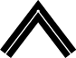

Paths
A path defines one or more shapes, or subpaths. A path can consist of straight lines, curves, or both. It can be open or closed. A path can be a simple shape, such as a line, circle, rectangle, or star, or a more complex shape such as the silhouette of a mountain range or an abstract doodle. Figure 3-1 shows some of the paths you can create. The straight line (at the upper left of the figure) is dashed; lines can also be solid. The squiggly path (in the middle top) is made up of several curves and is an open path. The concentric circles are filled, but not stroked. The State of California is a closed path, made up of many curves and lines, and the path is both stroked and filled. The stars illustrate two options for filling paths, which you’ll read about later in this chapter.

In this chapter, you’ll learn the building blocks that make up paths, how to stroke and paint paths, and the parameters that affect the appearance of paths.
In this section:
Path Creation and Path Painting
The Building Blocks
Creating a Path
Painting a Path
Clipping to a Path
Path Creation and Path Painting
Path creation and path painting are separate tasks. First you create a path. When you want to render a path, you request Quartz to paint it. As you can see in Figure 3-1, you can choose to stroke the path, fill the path, or both stroke and fill the path. You can also use a path to constrain the drawing of other objects within the bounds of the path creating, in effect, a clipping area.
Figure 3-2 shows a path that has been painted and that contains two subpaths. The subpath on the left is a rectangle, and the subpath on the right is an abstract shape made up of straight lines and curves. Each subpath is filled and its outline stroked.

Figure 3-3 shows multiple paths drawn independently. Each path contains a randomly generated curve, some of which are filled and others stroked. Drawing is constrained to a circular area by a clipping area.
The Building Blocks
Paths are built from lines, arcs, curves, and rectangles. Although a rectangle can be constructed using four lines, this shape is used so frequently that Quartz provides functions that allow you to create a rectangle in one step. Points are also essential building blocks of paths because points define starting and ending locations of shapes.
Points
Points are x- and y-coordinates that specify a location in user space. You can call the function CGContextMoveToPoint to specify a starting location when you build a path. Quartz keeps track of the current point, which is the last location used for path construction. For example, if you call the function CGContextMoveToPoint to set a location at (10, 10), then you draw a horizontal line 50 units long, the last point on the line, that is, (60, 10), becomes the current point. Lines, arcs, and curves are always drawn starting from the current point.
Most of the time you specify a point by passing to Quartz functions two floating-point values to specify x- and y-coordinates. Some functions require that you pass a CGPoint data structure, which holds two floating-point values.
Lines
A line is defined by its endpoints. Its starting point is always assumed to be the current point, so when you create a line, you specify only its endpoint. You use the function CGContextAddLineToPoint to append a single line to a path.
You can add a series of connected lines to a path by calling the function CGContextAddLines. You pass this function an array of points. The first point must be the starting point of the first line; the remaining points are endpoints. Quartz connects each point in the array with the next point in the array, using straight line segments.
Arcs
Arcs are circle segments. Quartz provides two functions that create arcs. The function CGContextAddArc creates a curved segment from a circle. You specify the center of the circle, the radius, and the radial angle (in radians). You can create a full circle by specifying a radial angle of 2 pi. Figure 3-4 shows multiple paths drawn independently. Each path contains a randomly generated circle; some are filled and others are stroked.

The function CGContextAddArcToPoint is ideal to use when you want to round the corners of a rectangle. Quartz uses the endpoints you supply to create two tangent lines. You also supply the radius of the circle from which Quartz slices the arc. The center point of the arc is the intersection of two radii, each of which is perpendicular to one of the two tangent lines. Each endpoint of the arc is a tangent point on one of the tangent lines, as shown in Figure 3-5. The red portion of the circle is what’s actually drawn.

If the current path already contains a subpath, Quartz appends a straight line segment from the current point to the starting point of the arc. If the current path is empty, Quartz creates a new subpath for the arc and does not add the initial straight line segment.
Curves
Quadratic and cubic Bézier curves are algebraic curves that can specify any number of interesting curvilinear shapes. Points on these curves are calculated by applying a polynomial formula to starting and ending points, and one or more control points. Shapes defined in this way are the basis for vector graphics. A formula is much more compact to store than an array of bits and has the advantage that the curve can be recreated at any resolution.
Figure 3-6 shows a variety of curves created by drawing multiple paths independently. Each path contains a randomly generated curve; some are filled and others are stroked.

The polynomial formulas that give to rise to quadratic and cubic Bézier curves, and the details on how to generate the curves from the formulas, are discussed in many mathematics texts and online sources that describe computer graphics. These details are not discussed here.
You use the function CGContextAddCurveToPoint to append a cubic Bézier curve from the current point, using control points and an endpoint you specify. Figure 3-7 shows the cubic Bézier curve that results from the current point, control points, and endpoint shown in the figure. The placement of the two control points determines the geometry of the curve. If the control points are both above the starting and ending points, the curve arches upward. If the control points are both below the starting and ending points, the curve arches downward. If the second control point is closer to the current point (starting point) than the first control point, the curve crosses over itself, creating a loop.
You can append a quadratic Bézier curve from the current point by calling the function CGContextAddQuadCurveToPoint, and specifying a control point and an endpoint. Figure 3-8 shows two curves that result from using the same endpoints but different control points. The control point determines the direction that the curve arches. It’s not possible to create as many interesting shapes with a quadratic Bézier curve as you can with a cubic one because quadratic curves use only one control point. For example, it’s not possible to create a crossover using a single control point.

Ellipses
An ellipse is essentially a squashed circle. You create one by defining two focus points and then plotting all the points that lie at a distance such that adding the distance from any point on the ellipse to one focus to the distance from that same point to the other focus point is always the same value. Figure 3-9 shows multiple paths drawn independently. Each path contains a randomly generated ellipse; some are filled and others are stroked.
In Mac OS X v10.4 and later, you can add an ellipse to the current path by calling the function CGContextAddEllipseInRect. You supply a rectangle that defines the bounds of the ellipse. Quartz approximates the ellipse using a sequence of Bézier curves. The center of the ellipse is the center of the rectangle. If the width and height of the rectangle are equal (that is, a square), the ellipse is circular, with a radius equal to one-half the width (or height) of the rectangle. If the width and height of the rectangle are unequal, they define the major and minor axes of the ellipse.
Ellipse drawing starts with a move-to operation and ends with a close-subpath operation, with all moves oriented in the clockwise direction.
If your application runs in versions of Mac OS X earlier than v10.3 you can create an ellipse as shown in Listing 3-1. First, you apply a transform to the context. Then, you call the function CGContextAddArc, passing 0 as the starting angle and 2 pi as the ending angle, which would normally result in a circle. Because the code in the listing scales the drawing destination so it’s twice as wide as it is high, drawing a circle into the transformed context, results in an ellipse. See “Transforms” for more information on setting up and using affine transforms.
Listing 3-1 Code that creates an ellipse by applying a transform to a circle
CGContextScaleCTM(context, 1,2); |
CGContextBeginPath(context); |
CGContextAddArc(context, 0, 0, 25, 0, 2*M_PI, false); |
CGContextStrokePath(context); |
Rectangles
You can add a rectangle to the current path by calling the function CGContextAddRect. You supply a CGRect structure that contains the origin of the rectangle and its width and height. Quartz draws the rectangle at the origin you specify; the current point has no bearing on the placement of the rectangle. Unlike arcs, if the path already contains a subpath, Quartz does not append a line segment from the current point to the origin of the rectangle.
You can add many rectangles to the current path by calling the function CGContextAddRects and supplying an array of CGRect structures. Figure 3-10 shows multiple paths drawn independently. Each path contains a randomly generated rectangle; some are filled and others are stroked.
Creating a Path
When you want to construct a path in a graphics context, you signal Quartz by calling the function CGContextBeginPath. Next, you set the starting point for the first shape, or subpath, in the path by calling the function CGContextMoveToPoint. After you establish the first point, you can add lines, arcs, curves, and rectangles to the path, keeping in mind the following:
Lines, arcs, and curves are drawn starting at the current point.
When you want to close a subpath within a path, call the function
CGContextClosePathto connect the current point to the starting point.When you draw arcs, Quartz draws a line between the current point and the starting point.
Quartz does not draw a line between the current point and the origin of a rectangle.
You must call a painting function to fill or stroke the path because creating a path does not draw the path. See “Painting a Path” for detailed information.
Before you begin a new path you call the function
CGContextBeginPath.
After you paint a path, it is flushed from the graphics context. You might not want to lose your path so easily, especially if it depicts a complex scene you want to use over and over again. For that reason, Quartz provides two data types for creating reusable paths—CGPathRef and CGMutablePathRef. You can call the function CGPathCreateMutable to create a mutable CGPath object to which you can add lines, arcs, curves, and rectangles. Quartz provides a set of CGPath functions that parallel the functions discussed in “The Building Blocks.” The path functions operate on a CGPath object instead of a graphics context. These functions are:
CGPathCreateMutable, which takes the place ofCGContextBeginPathCGPathMoveToPoint, which is similar toCGContextMoveToPointCGPathAddLineToPoint, which is similar toCGContextAddLineToPointCGPathAddCurveToPoint, which is similar toCGContextAddCurveToPointCGPathAddEllipseInRect, which is similar toCGContextAddEllipseInRectCGPathAddArc, which is similar toCGContextAddArcCGPathAddRect, which is similar toCGContextAddRectCGPathCloseSubpath, which is similar toCGContextClosePath
See Quartz 2D Reference Collection for a complete list of the path functions.
When you want to append the path to a graphics context, you call the function CGContextAddPath. The path stays in the graphics context until Quartz paints it. You can add the path again by calling CGContextAddPath.
Note: You can replace the path in a graphics context with the stroked version of the path by calling the function CGContextReplacePathWithStrokedPath. This function is available in Mac OS X v10.4.
Painting a Path
You can paint the current path by stroking or filling or both. Stroking paints a line that straddles the path. Filling paints the area contained within the path. Quartz has functions that let you stroke a path, fill a path, or both stroke and fill a path. The characteristics of the stroked line (width, color, and so forth), the fill color, and the method Quartz uses to calculate the fill area, are all part of the graphics state (see “Graphics States”).
Parameters That Affect Stroking
You can affect how a path is stroked by modifying the parameters listed in Table 3-1. These parameters are part of the graphics state, which means that the value you set for a parameter affects all subsequent stroking until you set the parameter to another value.
Parameter | Function to Set Parameter Value |
|---|---|
Line width | |
Line join | |
Line cap | |
Miter limit | |
Line dash pattern | |
Stroke color space | |
Stroke color | |
Stroke pattern |
The line width is the total width of the line, expressed in units of the user space. The line straddles the path, with half of the total width on either side.
The line join specifies how Quartz draws the junction between connected line segments. Quartz supports the line join styles described in Table 3-2. The default style is miter join.
Style | Appearance | Description |
|---|---|---|
Miter join |  | Quartz extends the outer edges of the strokes for the two segments until they meet at an angle, as in a picture frame. If the segments meet at too sharp an angle, a bevel join is used instead. A segment is too sharp if the length of the miter divided by the line width is greater than the miter limit. |
Round join |
| Quartz draws a semicircular arc with a diameter equal to the line width around the endpoint. The enclosed area is filled in. |
Bevel join | Quartz finishes the two segments with butt caps. The resulting notch beyond the ends of the segments is filled with a triangle. |

The line cap specifies the method used by CGContextStrokePath to draw the endpoint of the line. Quartz supports the line cap styles described in Table 3-3. The default style is butt cap.
Style | Appearance | Description |
|---|---|---|
Butt cap |
| Quartz squares off the stroke at the endpoint of the path. There is no projection beyond the end of the path. |
Round cap |
| Quartz draws a circle with a diameter equal to the line width around the point where the two segments meet, producing a rounded corner. The enclosed area is filled in. |
Projecting square cap |
| Quartz extends the stroke beyond the endpoint of the path for a distance equal to half the line width. The extension is squared off. |
A line dash pattern allows you to draw a segmented line along the stroked path. You control the size and placement of dash segments along the line by specifying the dash array and the dash phase as parameters to CGContextSetLineDash:
void CGContextSetLineDash ( |
CGContextRef ctx, |
float phase, |
const float lengths[], |
size_t count |
); |
The elements of the lengths parameter specify the widths of the dashes, alternating between the painted and unpainted segments of the line. The phase parameter specifies the starting point of the dash pattern. Figure 3-11 shows some line dash patterns.

The stroke color space determines how the stroke color values are interpreted by Quartz. Prior to Mac OS X v10.3, you set the color space separately from the color. Starting with Mac OS X v10.3, you can use a Quartz color (CGColorRef data type) that encapsulates both color and color space. For more information on setting color space and color, see “Color and Color Spaces.”
Functions for Stroking a Path
Quartz provides the functions shown in Table 3-4 for stroking the current path. Some are convenience functions for stroking rectangles or ellipses.
Function | Description |
|---|---|
| Strokes the current path. |
| Strokes the specified rectangle. |
| Strokes the specified rectangle, using the specified line width. |
| Strokes an ellipse that fits inside the specified rectangle. |
| Strokes a sequence of lines. |
| If you pass the constant |
The function CGContextStrokeLineSegments is equivalent to the following code:
CGContextBeginPath (context); |
for (k = 0; k < count; k += 2) { |
CGContextMoveToPoint(context, s[k].x, s[k].y); |
CGContextAddLineToPoint(context, s[k+1].x, s[k+1].y); |
} |
CGContextStrokePath(context); |
When you call CGContextStrokeLineSegments, you specify the line segments as an array of points, organized as pairs. Each pair consists of the starting point of a line segment followed by the ending point of a line segment. For example, the first point in the array specifies the starting position of the first line, the second point specifies the ending position of the first line, the third point specifies the starting position of the second line, and so forth.
Filling a Path
When you fill the current path, Quartz fills each subpath independently. Any subpath that has not been explicitly closed is closed implicitly by the fill routines.
There are two ways Quartz can calculate the fill area. Simple paths such as ovals and rectangles have a well-defined area. But if your path is composed of overlapping segments, such as the concentric circles shown in Figure 3-12, there are two rules you can use to determine the fill area.
The default fill rule is called the nonzero winding number rule. To determine whether a specific point should be painted, start at the point and draw a line beyond the bounds of the drawing. Starting with a count of 0, add 1 to the count every time a path segment crosses the line from left to right, and subtract 1 every time a path segment crosses the line from right to left. If the result is 0, the point is not painted. Otherwise, the point is painted. The direction that the path segments are drawn affects the outcome. Figure 3-12 shows two sets of inner and outer circles that are filled using the nonzero winding number rule. When each circle is drawn in the same direction, both circles are filled. When the circles are drawn in opposite directions, the inner circle is not filled.
You can opt to use the even-odd rule. To determine whether a specific point should be painted, start at the point and draw a line beyond the bounds of the drawing. Count the number of path segments that the line crosses. If the result is odd, the point is painted. If the result is even, the point is not painted. The direction that the path segments are drawn doesn’t affect the outcome. As you can see in Figure 3-12, it doesn’t matter which direction each circle is drawn, the fill will always be as shown.

Quartz provides the functions shown in Table 3-5 for filling the current path. Some are convenience functions for stroking rectangles or ellipses.
Function | Description |
|---|---|
| Fills the current path using the even-odd rule. |
| Fills the current path using the non-zero winding number rule. |
| Fills the area that fits inside the specified rectangle. |
| Fills the areas that fits inside the specified rectangles. |
| Fills an ellipse that fits inside the specified rectangle. |
| Fills the current path if you pass |
Setting Blend Modes
Blend modes (available starting in Mac OS X v10.4) specify how Quartz applies paint over a background. Quartz uses normal blend mode by default, which combines the foreground painting with the background painting using the following formula:
result = (alpha * foreground) + (1 - alpha) * background
“Color and Color Spaces” provides a detailed discussion of the alpha component of a color, which specifies the opacity of a color. For the examples in this section, you can assume a color is completely opaque (alpha value = 1.0). For opaque colors, when you paint using normal blend mode, anything you paint over the background completely obscures the background.
You can set the blend mode to achieve a variety of effects by calling the function CGContextSetBlendMode, passing the appropriate blend mode constant. Keep in mind that the blend mode is part of the graphics state. If you use the function CGContextSaveGState prior to changing the blend mode, then calling the function CGContextRestoreGState resets the blend mode to normal.
The rest of this section show the results of painting the rectangles shown in Figure 3-13 over the rectangles shown in Figure 3-14. In each case (Figure 3-15 through Figure 3-30), the background rectangles are painted using normal blend mode. Then the blend mode is changed by calling the function CGContextSetBlendMode with the appropriate constant. Finally, the foreground rectangles are painted.
Note: You can also use blend modes to composite two images or to composite an image over any content that’s already drawn to the graphics context. “Using Blend Modes With Images” provides information on how to use blend modes to composite images and shows the results of applying blend modes to two images.
Normal Blend Mode
Because normal blend mode is the default blend mode, you call the function CGContextSetBlendMode with the constant kCGBlendModeNormal only to reset the blend mode back to the default after you’ve used one of the other blend mode constants. Figure 3-15 shows the result of painting Figure 3-13 over Figure 3-14 using normal blend mode.
Multiply Blend Mode
Multiply blend mode specifies to multiply the foreground image samples with the background image samples. The resulting colors are at least as dark as either of the two contributing sample colors. Figure 3-16 shows the result of painting Figure 3-13 over Figure 3-14 using multiply blend mode. To use this blend mode, call the function CGContextSetBlendMode with the constant kCGBlendModeMultiply.
Screen Blend Mode
Screen blend mode specifies to multiply the inverse of the foreground image samples with the inverse of the background image samples. The resulting colors are at least as light as either of the two contributing sample colors. Figure 3-17 shows the result of painting Figure 3-13 over Figure 3-14 using screen blend mode. To use this blend mode, call the function CGContextSetBlendMode with the constant kCGBlendModeScreen.
Overlay Blend Mode
Overlay blend mode specifies to either multiply or screen the foreground image samples with the background image samples, depending on the background color. The background color mixes with the foreground color to reflect the lightness or darkness of the background. Figure 3-18 shows the result of painting Figure 3-13 over Figure 3-14 using overlay blend mode. To use this blend mode, call the function CGContextSetBlendMode with the constant kCGBlendModeOverlay.
Darken Blend Mode
Specifies to create the composite image samples by choosing the darker samples (either from the foreground image or the background). The background image samples are replaced by any foreground image samples that are darker. Otherwise, the background image samples are left unchanged. Figure 3-19 shows the result of painting Figure 3-13 over Figure 3-14 using darken blend mode. To use this blend mode, call the function CGContextSetBlendMode with the constant kCGBlendModeDarken.
Lighten Blend Mode
Specifies to create the composite image samples by choosing the lighter samples (either from the foreground or the background). The result is that the background image samples are replaced by any foreground image samples that are lighter. Otherwise, the background image samples are left unchanged. Figure 3-20 shows the result of painting Figure 3-13 over Figure 3-14 using lighten blend mode. To use this blend mode, call the function CGContextSetBlendMode with the constant kCGBlendModeLighten.
Color Dodge Blend Mode
Specifies to brighten the background image samples to reflect the foreground image samples. Foreground image sample values that specify black do not produce a change. Figure 3-21 shows the result of painting Figure 3-13 over Figure 3-14 using color dodge blend mode. To use this blend mode, call the function CGContextSetBlendMode with the constant kCGBlendModeColorDodge.
Color Burn Blend Mode
Specifies to darken the background image samples to reflect the foreground image samples. Foreground image sample values that specify white do not produce a change. Figure 3-22 shows the result of painting Figure 3-13 over Figure 3-14 using color burn blend mode. To use this blend mode, call the function CGContextSetBlendMode with the constant kCGBlendModeColorBurn.
Soft Light Blend Mode
Specifies to either darken or lighten colors, depending on the foreground image sample color. If the foreground image sample color is lighter than 50% gray, the background is lightened, similar to dodging. If the foreground image sample color is darker than 50% gray, the background is darkened, similar to burning. If the foreground image sample color is equal to 50% gray, the background is not changed. Image samples that are equal to pure black or pure white produce darker or lighter areas, but do not result in pure black or white. The overall effect is similar to what you’d achieve by shining a diffuse spotlight on the foreground image. Use this to add highlights to a scene. Figure 3-23 shows the result of painting Figure 3-13 over Figure 3-14 using soft light blend mode. To use this blend mode, call the function CGContextSetBlendMode with the constant kCGBlendModeSoftLight.
Hard Light Blend Mode
Specifies to either multiply or screen colors, depending on the foreground image sample color. If the foreground image sample color is lighter than 50% gray, the background is lightened, similar to screening. If the foreground image sample color is darker than 50% gray, the background is darkened, similar to multiplying. If the foreground image sample color is equal to 50% gray, the foreground image is not changed. Image samples that are equal to pure black or pure white result in pure black or white. The overall effect is similar to what you’d achieve by shining a harsh spotlight on the foreground image. Use this to add highlights to a scene. Figure 3-24 shows the result of painting Figure 3-13 over Figure 3-14 using hard light blend mode. To use this blend mode, call the function CGContextSetBlendMode with the constant kCGBlendModeHardLight.
Difference Blend Mode
Specifies to subtract either the foreground image sample color from the background image sample color, or the reverse, depending on which sample has the greater brightness value. Foreground image sample values that are black produce no change; white inverts the background color values. Figure 3-25 shows the result of painting Figure 3-13 over Figure 3-14 using difference blend mode. To use this blend mode, call the function CGContextSetBlendMode with the constant kCGBlendModeDifference.
Exclusion Blend Mode
Specifies an effect similar to that produced by kCGBlendModeDifference, but with lower contrast. Foreground image sample values that are black don’t produce a change; white inverts the background color values. Figure 3-26 shows the result of painting Figure 3-13 over Figure 3-14 using exclusion blend mode. To use this blend mode, call the function CGContextSetBlendMode with the constant kCGBlendModeExclusion.
Hue Blend Mode
Specifies to use the luminance and saturation values of the background with the hue of the foreground image. Figure 3-27 shows the result of painting Figure 3-13 over Figure 3-14 using hue blend mode. To use this blend mode, call the function CGContextSetBlendMode with the constant kCGBlendModeHue.
Saturation Blend Mode
Specifies to use the luminance and hue values of the background with the saturation of the foreground image. Areas of the background that have no saturation (that is, pure gray areas) don’t produce a change. Figure 3-28 shows the result of painting Figure 3-13 over Figure 3-14 using saturation blend mode. To use this blend mode, call the function CGContextSetBlendMode with the constant kCGBlendModeSaturation.
Color Blend Mode
Specifies to use the luminance values of the background with the hue and saturation values of the foreground image. This mode preserves the gray levels in the image. You can use this mode to color monochrome images or to tint color images. Figure 3-29 shows the result of painting Figure 3-13 over Figure 3-14 using color blend mode. To use this blend mode, call the function CGContextSetBlendMode with the constant kCGBlendModeColor.
Luminosity Blend Mode
Specifies to use the hue and saturation of the background with the luminance of the foreground image. This mode creates an effect that is inverse to the effect created by kCGBlendModeColor. Figure 3-30 shows the result of painting Figure 3-13 over Figure 3-14 using luminosity blend mode. To use this blend mode, call the function CGContextSetBlendMode with the constant kCGBlendModeLuminosity.
Clipping to a Path
The current clipping area is created from a path that serves as a mask, allowing you to block out the part of the page that you don’t want to paint. For example, if you have a very large bitmap image and want to show only a small portion of it, you could set the clipping area to display only the portion you want to show.
When you paint, Quartz renders paint only within the clipping area. Drawing that occurs inside the closed subpaths of the clipping area is visible; drawing that occurs outside the closed subpaths of the clipping area is not.
When the graphics context is initially created, the clipping area includes all of the paintable area of the context (for example, the media box of a PDF context). You alter the clipping area by setting the current path and then using a clipping function instead of a drawing function. The clipping function intersects the filled area of the current path with the existing clipping area. Thus, you can intersect the clipping area, shrinking the visible area of the picture, but you cannot increase the area of the clipping area.
The clipping area is part of the graphics state. To restore the clipping area to a previous state, you can save the graphics state before you clip, and restore the graphics state after you’re done with clipped drawing.
Listing 3-2 shows a code fragment that sets up a clipping area in the shape of a circle. This code causes drawing to be clipped, similar to what’s shown in Figure 3-3. (For another example, see “Clip the Context” in the chapter “Gradients.”)
Listing 3-2 Code that sets up a clip using a circle
CGContextBeginPath (context); |
CGContextAddArc (context, w/2, h/2, ((w>h) ? h : w)/2, 0, 2*PI, 0); |
CGContextClosePath (context); |
CGContextClip (context); |
Function | Description |
|---|---|
Uses the nonzero winding number rule to calculate the intersection of the current path with the current clipping path. | |
Uses the even-odd rule to calculate the intersection of the current path with the current clipping path. | |
Sets the clipping area to the area that intersects both the current clipping path and the specified rectangle. | |
Sets the clipping area to the area that intersects both the current clipping path and region within the specified rectangles. | |
Maps a mask into the specified rectangle and intersects it with the current clipping area of the graphics context. Any subsequent path drawing you perform to the graphics context is clipped. (See “Masking an Image by Clipping the Context.”) Available in Mac OS X v10.4 and later. |
© 2001, 2007 Apple Inc. All Rights Reserved. (Last updated: 2007-12-11)